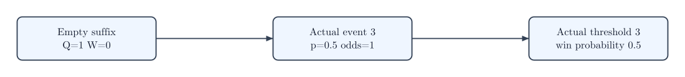
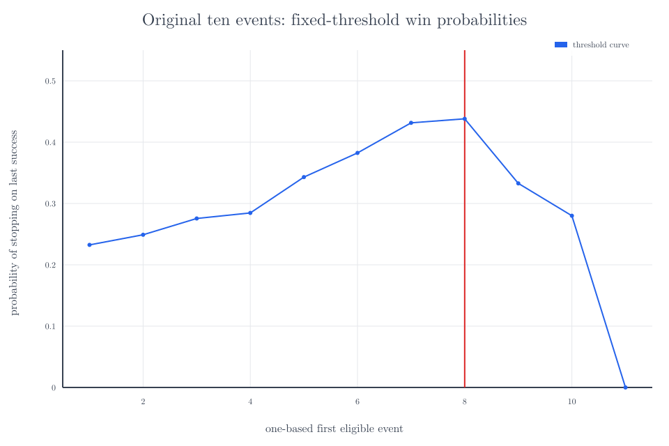
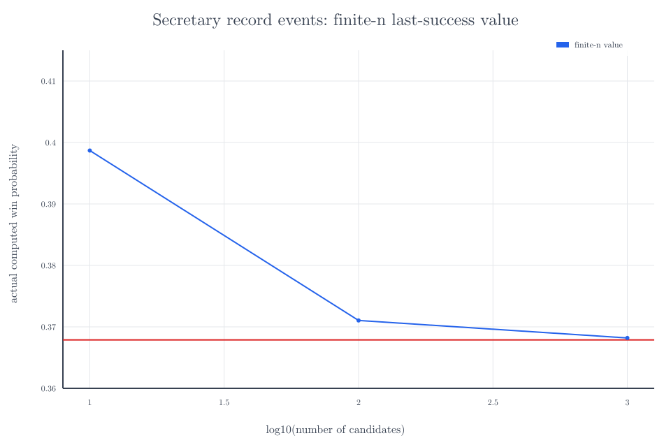
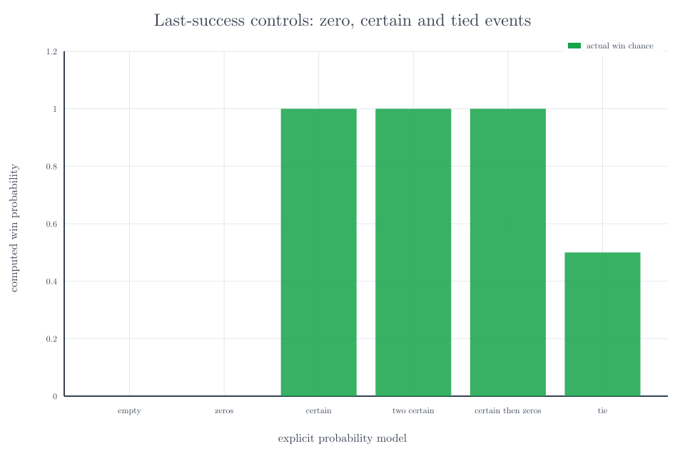

Sum the odds to one: stopping on the last success
Abstract
Solve the independent last-success stopping problem with the canonical odds producer. Tiny hand-checkable events come first, followed by the original ten probabilities and secretary-model controls. Actual reverse traversal is distinguished from the separate computation of all threshold probabilities.
What constitutes a win
Let X_i be mutually independent Bernoulli events with known probabilities p_i. After observing each event, either continue or stop irreversibly at a success. A win means stopping at the final success in the entire sequence. Never encountering an accepted success loses. Arbitrary dependence, estimated probabilities and unknown future probabilities are outside this model.
For a fixed first eligible index s, the strategy accepts the first subsequent success. It wins exactly when the suffix contains one success. Write Q_s for zero successes and W_s for exactly one. Prepending p to a suffix gives
The empty suffix starts Q=1,W=0. This recurrence also handles p=1 without division. When all suffix probabilities are below1,
Comparing adjacent thresholds gives W_s−W_{s+1}=p_s Q_{s+1}(1−R_{s+1}). Extending a suffix improves its win probability until the later suffix odds exceed1. Thus the odds rule scans backwards and stops when the accumulated odds reach1, or a certain event is encountered; if neither occurs it uses the full sequence. The usual independence argument also establishes optimality among adaptive stopping rules, not just this threshold family. Equality can give multiple equally good thresholds, so a plotted maximum need not identify a unique index.
Three half-probability events
For[.5,.5,.5], the producer visits only the last event: its odds equal1 immediately, so threshold3 gives win probability.5. Threshold2 has the same.5 probability. The first event is never visited by the suffix loop, although every input probability is validated. The diagram and table use the actual single record.
#include <dm/dm.hpp>
int main() {
std::filesystem::create_directories("build");
auto t = dm::algorithms::odds_algorithm_trace({.5, .5, .5});
auto &s = t.steps[0];
dm::graphics::Diagram d;
d.node("empty", {0, 0},
std::format("Empty suffix\nQ={} W={}", double(s.none_before),
double(s.one_before)));
d.node("event", {7, 0},
std::format("Actual event {}\np={} odds={}", s.event, s.probability,
double(s.odds)));
d.node("stop", {14, 0},
std::format("Actual threshold {}\nwin probability {}",
t.run.result.threshold, t.run.result.win_probability));
d.edge("empty", "event").edge("event", "stop");
std::print("| visited event | p | actual finite odds sum | actual suffix Q | actual suffix W | stop " "reached |\n| ---: | ---: | ---: | ---: | ---: | --- |\n");
for (auto &s : t.steps)
std::print("| {} | {} | {} | {} | {} | {} |\n", s.event, s.probability,
double(s.sum_after), double(s.none_after),
double(s.one_after), s.reached);
d.save_svg("build/odds_tiny.svg");
}| visited event | p | actual finite odds sum | actual suffix Q | actual suffix W | stop reached |
|---|---|---|---|---|---|
| 3 | 0.5 | 1 | 0.5 | 0.5 | true |

The original ten known probabilities
The original vector is[.10,.15,.05,.30,.20,.40,.25,.35,.12,.28]. It is a fixed illustrative instance, rather than a random sample or a labeled dataset. The canonical curve helper computes every fixed-threshold W_s through the suffix recurrence, including the never-accept threshold n+1. Those curve rows are not falsely presented as visits made by the early-stopping producer.
#include <dm/dm.hpp>
int main() {
std::filesystem::create_directories("build");
auto inputs = dm::algorithms::odds_algorithm_demo_probabilities();
auto t = dm::algorithms::odds_algorithm_trace(inputs);
auto curve = dm::algorithms::odds_threshold_curve(inputs);
std::vector<double> x, y;
std::print("Actual selected threshold: {}. Actual win probability: {:.12f}. Actual visited suffix " "events: {}.\n\n",
t.run.result.threshold, t.run.result.win_probability,
t.run.visits);
std::print("| fixed threshold | actual computed win probability | actual no-success probability |\n| " "---: | ---: | ---: |\n");
for (auto &r : curve) {
x.push_back(r.threshold);
y.push_back(r.win_probability);
std::print("| {} | {:.12f} | {:.12f} |\n", r.threshold,
r.win_probability, r.no_success_probability);
}
auto p = dm::graphics::RPlot::create();
p.lines(x, y, "threshold curve", dm::graphics::RGBA{37, 99, 235, 255}).points(x, y, dm::graphics::RGBA{37, 99, 235, 255}, 3.).abline_v(t.run.result.threshold, dm::graphics::RGB{220, 38, 38}, 2);
p.title("Original ten events: fixed-threshold win probabilities").x_label(
"one-based first eligible event").y_label("probability of stopping on last success").y_limits(0, .55).save_svg("build/odds_original.svg");
}Actual selected threshold: 8. Actual win probability: 0.438080000000. Actual visited suffix events: 3.
| fixed threshold | actual computed win probability | actual no-success probability |
|---|---|---|
| 1 | 0.232496820720 | 0.075424789440 |
| 2 | 0.249018098400 | 0.083805321600 |
| 3 | 0.275563440000 | 0.098594496000 |
| 4 | 0.284604480000 | 0.103783680000 |
| 5 | 0.343036800000 | 0.148262400000 |
| 6 | 0.382464000000 | 0.185328000000 |
| 7 | 0.431520000000 | 0.308880000000 |
| 8 | 0.438080000000 | 0.411840000000 |
| 9 | 0.332800000000 | 0.633600000000 |
| 10 | 0.280000000000 | 0.720000000000 |
| 11 | 0.000000000000 | 1.000000000000 |

The secretary record model
In a uniform random permutation of n distinct candidates, the event that position i sets a new record has probability1/i; these record indicators are independent. Selecting the last record is equivalent to selecting the overall best candidate. This particular model satisfies the odds theorem’s assumptions. The relation does not justify applying the rule to arbitrary dependent sequences of observed ranks.
For i≥2 the odds are1/(i−1). Summing their tail to1 places the threshold near n/e, while the optimal probability approaches1/e. The table preserves the original n=10,100,1000 studies; the plot compares their actual finite-n values with the asymptotic constant, without reporting asymptotic equality at finite n.
#include <dm/dm.hpp>
int main() {
std::filesystem::create_directories("build");
std::vector<double> x, y;
std::print("| events n | actual threshold | threshold/n | actual win probability | actual suffix visits " "|\n| ---: | ---: | ---: | ---: | ---: |\n");
for (std::size_t n : {10, 100, 1000}) {
auto r =
dm::algorithms::odds_algorithm_run(dm::algorithms::odds_secretary_probabilities(n));
x.push_back(std::log10(double(n)));
y.push_back(r.result.win_probability);
std::print("| {} | {} | {:.9f} | {:.12f} | {} |\n", n,
r.result.threshold, double(r.result.threshold) / n,
r.result.win_probability, r.visits);
}
auto p = dm::graphics::RPlot::create();
p.lines(x, y, "finite-n value", dm::graphics::RGBA{37, 99, 235, 255}).points(x, y, dm::graphics::RGBA{37, 99, 235, 255}, 3.).abline_h(1 / std::exp(1.), dm::graphics::RGB{220, 38, 38}, 2);
p.title("Secretary record events: finite-n last-success value").x_label(
"log10(number of candidates)").y_label("actual computed win probability").y_limits(.36, .415).save_svg("build/odds_secretary.svg");
}| events n | actual threshold | threshold/n | actual win probability | actual suffix visits |
|---|---|---|---|---|
| 10 | 4 | 0.400000000 | 0.398690476190 | 7 |
| 100 | 38 | 0.380000000 | 0.371042778713 | 63 |
| 1000 | 369 | 0.369000000 | 0.368195617202 | 632 |

Certain events, complete validation and ownership
The previous producer treated p=1 as zero odds. For a sole certain event it consequently reported zero win probability, although stopping there wins surely. The corrected producer flags a certain event, terminates at it if reached, and computes W through the nonsingular recurrence. For two certain events the selected threshold is the later one. Zero probabilities, empty inputs and ties remain explicit controls.
All probabilities, including an unvisited prefix, must be finite and belong to[0,1]. Validation precedes adaptive work. Empty input retains the historical threshold0/probability0 convention; a nonempty all-zero input returns threshold1/probability0. A trace owns all input values plus the actual visited suffix records. Its logical quota counts n+2+visits, default1000000, zero disabling; complete input/result admission and online record admission precede copying. This is not bytes or a peak-memory estimate. Ordinary validation and traversal take O(n) time and constant working storage; a trace takes O(n+visits) owned storage. The separate curve requires O(n) work and n+1 output rows.
Wide arithmetic reduces avoidable singularities but does not certify rounding error, a uniquely optimal threshold near a tie, or validity under dependence. The invariant probabilities and optimality statement concern the stated independent-event model.
#include <dm/dm.hpp>
int main() {
std::filesystem::create_directories("build");
std::vector<std::vector<double>> inputs{{}, {0., 0.}, {1.}, {1., 1.},
{1., 0., 0.}, {.5, .5}};
std::vector<std::string> labels{"empty", "zeros", "certain", "two certain",
"certain then zeros", "tie"};
std::vector<double> wins;
std::print("| control | actual threshold | actual win probability | certain stop | actual visits | " "captured units |\n| --- | ---: | ---: | --- | ---: | ---: |\n");
for (std::size_t i = 0; i < inputs.size(); ++i) {
auto t = dm::algorithms::odds_algorithm_trace(inputs[i]);
wins.push_back(t.run.result.win_probability);
std::print("| {} | {} | {} | {} | {} | {} |\n", labels[i],
t.run.result.threshold, t.run.result.win_probability,
t.run.certain, t.run.visits, t.captured_entries);
}
auto p = dm::graphics::RPlot::barplot(wins, labels, "actual win chance");
p.title("Last-success controls: zero, certain and tied events").x_label(
"explicit probability model").y_label("computed win probability").y_limits(0, 1.2).save_svg("build/odds_controls.svg");
}| control | actual threshold | actual win probability | certain stop | actual visits | captured units |
|---|---|---|---|---|---|
| empty | 0 | 0 | false | 0 | 2 |
| zeros | 1 | 0 | false | 2 | 6 |
| certain | 1 | 1 | true | 1 | 4 |
| two certain | 2 | 1 | true | 1 | 5 |
| certain then zeros | 1 | 1 | true | 3 | 8 |
| tie | 2 | 0.5 | false | 1 | 5 |

Bruss(2000), Sum the odds to one and stop gives the independent-event optimal stopping theorem. The recurrence and threshold comparison above explain the quantities produced here; no external observations or estimated event probabilities are introduced.
Verification
This ten-report batch passes 50 CTest cases, 25 directly instrumented ASan/UBSan
cases, 174 compiled and executed public examples, 707/707 scoped documentation
definitions and ten representative clangd hovers. Independent Python checks
verify 5662 records with 27916 checks: optimal prefix-code costs, train-only
Titanic category counts and held-out confusion, and all 5001 actual original
Lorenz RK4 steps. Frozen valid-input comparisons cover all ten producers, with
intentional guard, ownership, arithmetic and endpoint corrections stated
separately. Twelve checkout headers and twelve byte-identical installed
development headers compile independently; an installed-header native consumer
links and runs. All 40 complete programs execute, and 40 native figures have
been visually reviewed. HTML/Markdown exports preserve computed results and
image bytes. These are scoped native checks. Receipts:
build/mepml-conversion/batch-264-273/.